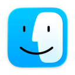

For Macs connected to a TV
Tune in from the couch.
Mac TV turns your Mac into a TV set: a home screen for your streaming apps, and your phone as the remote.
CHANNEL
VOLUME
Turn the knobs, or use your arrow keys ↗
What's on
- Apple TV-style home screen Liquid Glass
- Netflix, YouTube, Prime Video Official players
- Your phone is the remote Scan a QR code
- Any app or website Its own tile
- Skip intros, next episode Automatic
- Works with the lid closed Battery-safe
- Steam games and Big Picture Through Steam
- Game controllers PlayStation, Xbox
- Sleep timer and screensaver Apple aerials
- No account, no tracking Nothing kept
Your Mac is on air.
Download for Mac
macOS 14 or later · Apple silicon and Intel